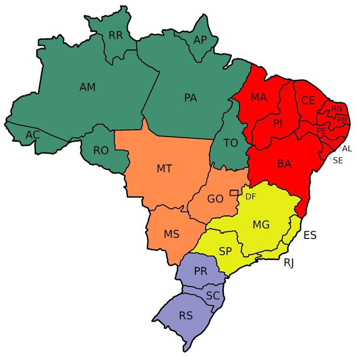

API-REST Estados
API RESTful desenvolvida em Node.js e JavaScript, projetada para fornecer e manipular informações sobre estados e cidades do Brasil. A aplicação foi estruturada com foco em organização, modularidade e boas práticas, utilizando um modelo de dados centralizado em um arquivo JSON externo (estados_cidades.js) e funções específicas para cada tipo de consulta.
API-REST WhatsApp
API RESTful desenvolvida em Node.js e JavaScript, projetada para realizar integração com o WhatsApp e permitir o gerenciamento de informações em tempo real. A aplicação foi estruturada seguindo boas práticas de arquitetura REST, com endpoints organizados e documentação clara para facilitar o consumo por outras aplicações.